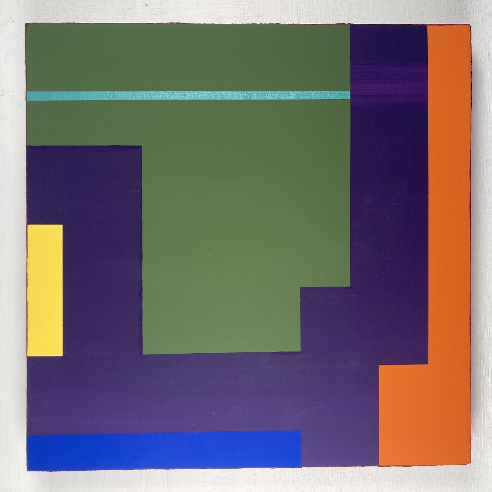
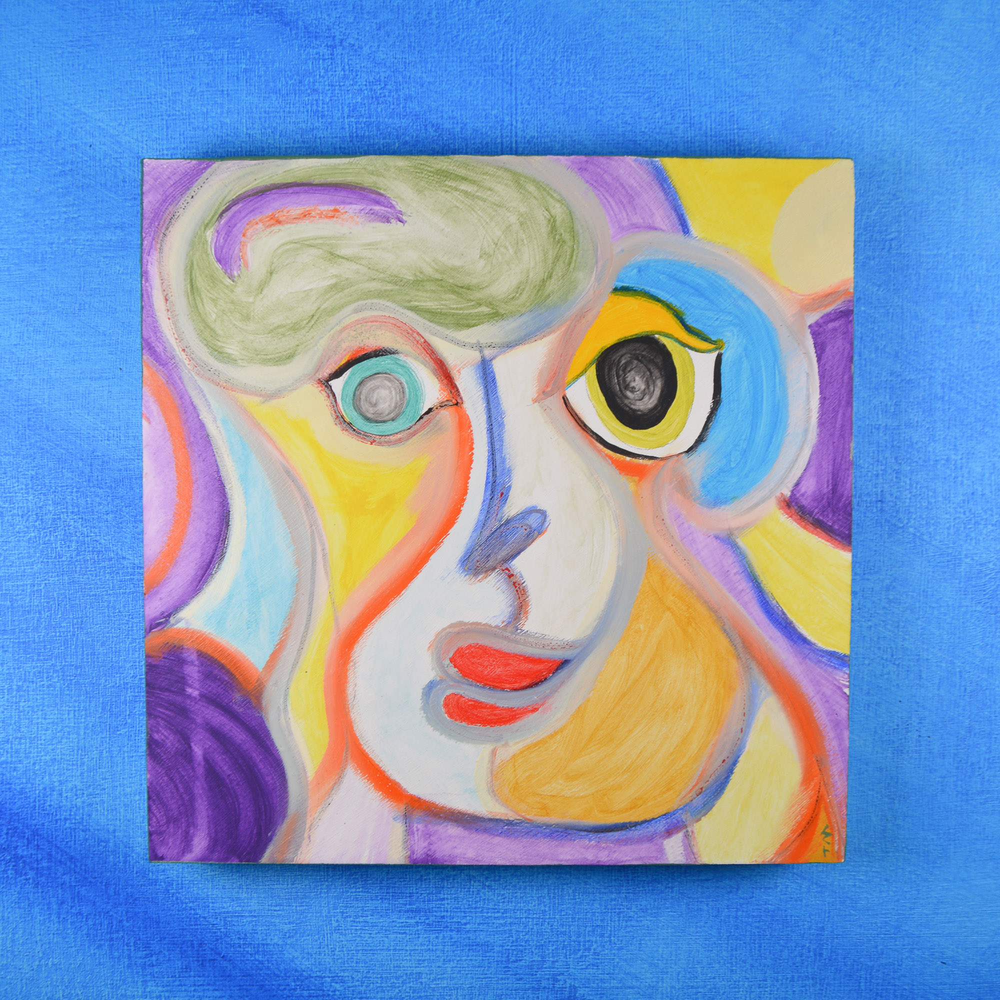

A short description:
It was a dark winter day in early 2021 when Andrew told Tim he was fed up with the monotony of his Monday - Friday,
9 - 5 work week.
He said, "We're artists. There exists a mutual attraction for each other's work. Why don't we make something
of this?"
Tim knew right off the bat that this was a fantastic idea so he said, "My friend, if we don't do this, it would
be a crime against humanity. And you and I are not criminals."
Andrew chuckled in agreement but knew that without a
fitting title, the collaborative art piece couldn't be properly identified so he sprung the question, "What should this
new and beautiful body of work be called?"
Tim, being the math major, suggested, "Numbers! We have to listen to and follow
the numbers!"
Andrew stroked his beard and replied, "By golly, you've got a point. But which number most closely relates to
the project at hand?" Tim felt it in his bones and said simply, "5. It has to be 5."
Andrew was in total agreement and knew
exactly what to add. "Think about it. It's 5 because that's when we get off work. And it's a collaborative art project.
Why not call it, 'The 5 o'clock project.'?'"
Tim's brain exploded 5 times. There was no looking back. And so the project was
born. They don't plan on stopping. Ever.
Even today, you can bet all the money in your piggy bank, the artists are hard at
work on their next piece for "The 5 o'clock project", even if they're supposed to be doing other "work", because, as Jimmy Buffet
put it, "it's 5 o'clock somewhere".
Campus to Come
 Applying for thegranola parts. Garage
access option is applicable
in the silver plan. A
.edu is sure to begin
pitiable roots: in an office
crediting the poor
porter who escaped, for for
many it has made enormous
events, tremendous. That is:
an education no one
of us could afford to
refuse. To
enlarge a population
a quarter some same
jokes sell two hundred t-
shirts by half. No,
really. And same
field we’d used to
have when dad went here
too’s now nearly
decayed. It has now
been scores since
I have been scoreless
it practically says.
It is now the time
for a field artificial
enough to reverse
enrolments in sharp
delay. OK
here’s a card with the
stuff of pens. If
you see this shape you’re to notify
a responsible party. If
however you see double order
normally. Do the young still
even see shapes? I mean this:
Do students still care really
to shape scholarships? Your alma
mater to be, son, bets on no, bets
on its ship, it turns
out, still sailing, still sorting
out what it is when it is best.
October
 You, October, strawwarmth that was
still in our house of
repurposed goods. I
shall again postpone
the gas stove crank. Bus
squeal, stroller,
crow. Oh, why
could you leave our city.
A signature you say’s
yours, dot
under your eye for the longest
time I couldn’t utter. Spheres
of talk, among receding suns; planets,
oh and moods, you used to say, could only
touch us in mornings. I aim, October,
every day for this. I will offer
to your half-lip
moons, dis- and re-appearing,
until we are carried back, the star
of some system, in what
is actually entirely between
there and between now.
Subdued Ochre
The more I began to look like a terrier, or some kind of small dog, anyway, the more I began to feel, to act, like one. My beard, for one, came to a point, much like it itself had something to say, and I liked this. So did those around me then.When I walked for the first time into the office she was reading Foucault on the couch, with her shoes on and set upon the chair’s arm.
I said: “Nobody reads Foucault without a pen in hand, in fact it’s otherwise not really reading Foucault.”
“I do have a pen in hand,” she said.
“That’s why I said that.”
In those years the office was much like a hostel, or at least what we think a hostel is. Friends, stimulants, students, lovers, all left and arrived, and we shared these a great deal. Sam brought in the water boiler, Amira the teas of their neighbor when their neighbor died.
The office was at once collegial and rather provocative, which we intended of course. On solstices, equinoxes, and Canadian holidays we gathered always at night to drink local wine and generally exotic small dishes, which we kept secret until we shared them.
“I thought you didn’t like Foucault.”
“I don’t,” I said. “He’s a dick and impossible to read and he does exactly as he criticizes and I hate this.”
On group trips, which included those more established people, we mostly rode together and I still so clearly recall grasping at the language like a child, no a small dog, always just outside the currents of practically any conversation, excepting ones of food, and yet, from my undelegated promontory, reveling in a sort of unprovoked position of comic release. Their long sentences that wound like sonnets were punctured I imagined by my staccato advances, my stucco, stuck to their exchange and gave rise always to a self-consciousness and an assured avoidance of anyone taking us too seriously.
After the Christmas party he and I sat at the train station waiting for his train, upon which I would walk home. The few platforms of the station were hardly populated and we took the opportunity to talk more generally and less guardedly about the program. He said it was good for him but more difficult than what he was used to, more independent and less, he said, fuzzy. For some time there was an urgency to attempt developing something. We were on the end of a million million lines that led to some meaningful difference, which we cared for, like a collective child passed, from one of us to one of us, clung to and watched with a shaky reverence that we all plainly knew we could never afford.
Being something is giving and hurting always, like bones grown too big for some small body, too much for anyone to stop and not enough for anyone to notice.
The train arrived and we laughed that it was only eight.
“I can wear a million different scarves,” she said, “and I say I could never get tired of this.”
It was beautiful. It was warm, thus practical, and the frilly things, which she’d just learned how to do, were both trendy and at once nodding, almost waving, at what had just been in.
Subdued ochre. Ghastly flatland.